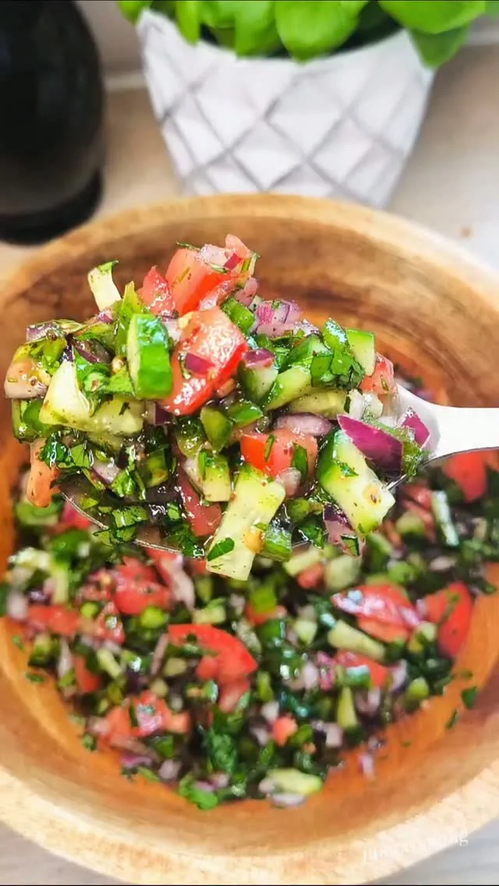

Çoban Salatası – türkischer Bauernsalat
Frisch, leicht und voller Geschmack – dieser türkische Bauernsalat ist die perfekte Beilage zu Grillgerichten, Fleisch, Fisch oder einfach als leichter Snack an warmen Tagen. Mit knackigem Gemüse, frischen Kräutern und einem aromatischen Dressing bringt dieser Salat echtes Urlaubsfeeling auf den Teller.
- 10 Zutaten
- 4 Schritte
Zur Zubereitung Video ansehen ↗
Zutaten
- Für das Dressing
Zubereitung
- Tomaten, Gurke, Zwiebel, Paprika und Petersilie fein würfeln bzw. hacken.
- Alle Zutaten in eine Schüssel geben.
- Olivenöl, Granatapfelsirup, Zitronensaft, Sumach sowie Salz und Pfeffer hinzufügen.
- Alles gründlich vermengen und direkt servieren.